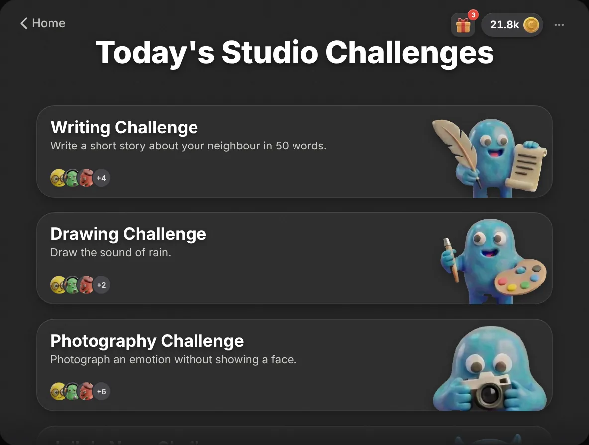
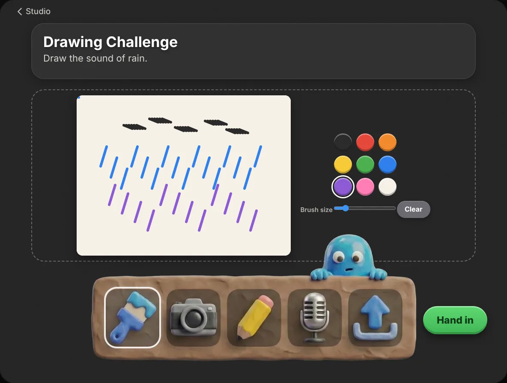
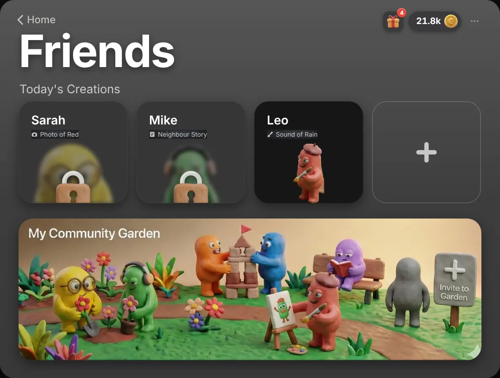
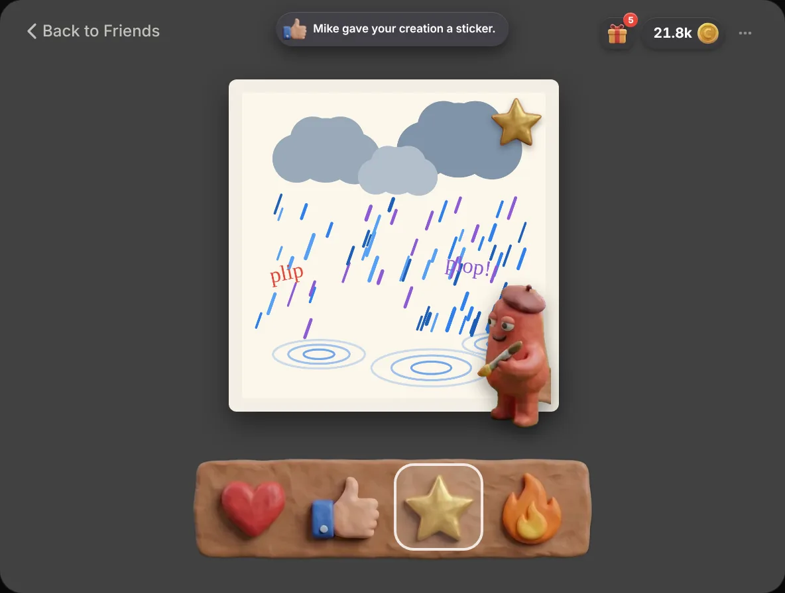
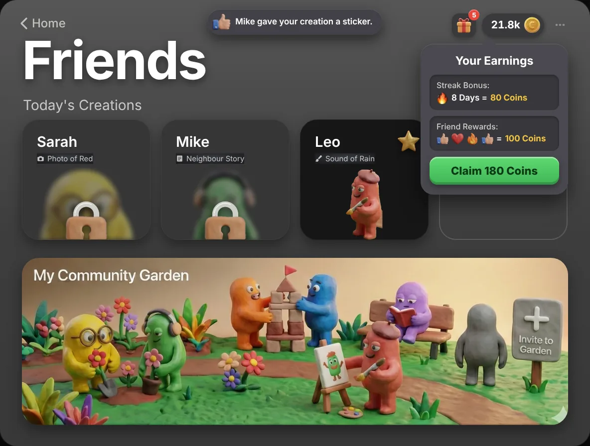
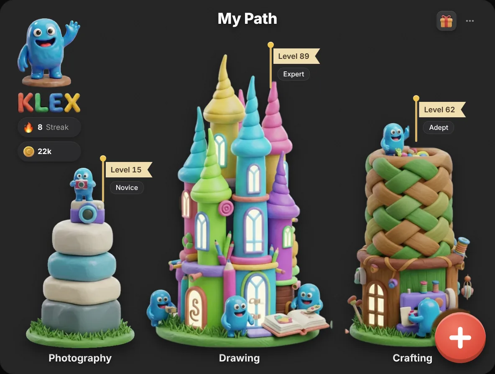
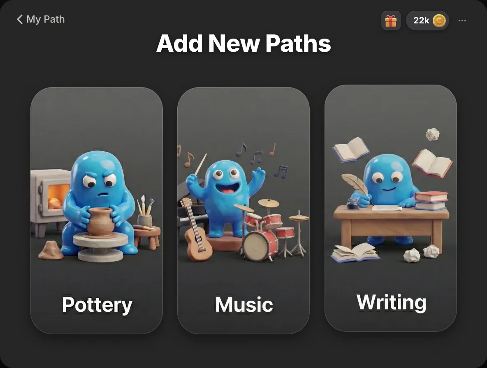
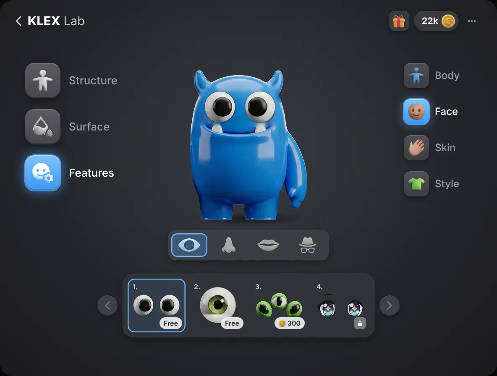
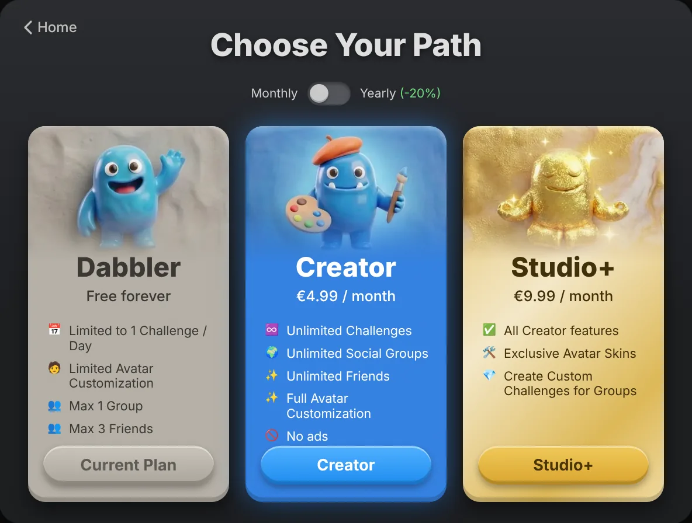
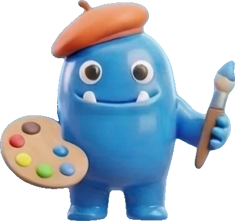

KLEX
Create, don't scroll.
My role
KLEX is a start-up concept I developed with Valentin Steiner and Vanessa Riedmüller as a business plan project in the winter semester 2025. In the founding team I hold the technical lead as CTO, covering product, IT and research and development. The illustrations of the app's logic on this page come from that work, and the prototype below makes the concept clickable.
The product
KLEX is a micro-learning app for children aged 6 to 14 that turns passive screen time into short creative training. Every day it offers small challenges in writing, drawing, photography, riddles and inventive problem solving. Friends share their results in closed groups, but only after handing in their own: this Blind Mode removes copying and comparison pressure. Streaks, growing towers and a clay avatar keep children coming back.
- Product and concept
- Daily challenges across disciplines, Blind Mode for social learning, streaks, towers and avatar as motivation. The didactic concept and game mechanics are fully worked out in the plan.
- Technology
- Framework decision for Flutter after comparing native development, React Native and Unity. Modular architecture, cloud hosting in the EU, privacy by design.
- Business model
- Freemium with three plans, kid-friendly partner ads in the free plan, market sizing for the DACH region and a three-phase roadmap to launch.
- Design
- A clay look that sets the app apart from the flat vector style common in children's apps. Mockups of every main screen and of the logic between them.
- Prototype
- A clickable web version of the concept with working hand-in, Blind Mode, rewards, towers, avatar lab and plan limits.
Try it
The prototype runs here in the page. Open the Studio, solve a challenge with any tool, and watch a friend's creation unlock. The ⋯ menu switches plans and jumps to the next day.
How it works
One loop, repeated daily: a small creative prompt, a solution in any medium, and only then a look at what friends made of the same task.
New challenges every day across writing, drawing, photography, riddles and problem solving. Each one takes 5 to 15 minutes and little or no material.
Paint, photograph, write, record or upload. The challenge gives the spark, the child chooses the way.
Friends' solutions stay locked until your own is handed in. Nobody copies, nobody compares first, and the reveal shows how differently others solved it.
Feedback is one of four stickers. No comment threads, no counters, no ranking.
Streak days and stickers from friends become coins, collected through the gift.
Every hand-in adds a level to the tower of its discipline. Towers only grow: they stay standing when a streak breaks.
More disciplines can be added at any time, each with its own tower.
Coins style the avatar: body, surface, features and things to hold.
Free to start with one challenge a day. Creator removes the limits and the ads, Studio+ adds custom challenges for groups.









Market in figures
From every child with a smartphone to the subscribers the plan aims for by 2029.
- Worldwidechildren 6 to 14 with smartphone access
- Europechildren 6 to 14
- DACH regionstart market
- Paying parentsabout 5% of DACH
- Goal for 20292 to 3% of those
Figures from our business plan, winter semester 2025. The bars share one scale; the last two are too small to draw to scale.
Business model
Freemium: free for reach and habit, subscriptions for revenue.
Dabbler
- 1 challenge per day
- 1 group, up to 3 friends
- Limited avatar
- Small partner ads

Creator
- Unlimited challenges
- Unlimited groups and friends
- Full avatar customisation
- No ads
Studio+
- Everything in Creator
- Exclusive avatar skins
- Create challenges for groups
Yearly plans cost €49.99 and €99.99. Parents in the EdTech segment are willing to pay €5 to €10 a month for a good learning app; KLEX sits inside that range. Ads in the free plan come only from related products such as pens, paints and craft materials.
Competition
KLEX sits between school apps, pure entertainment and single-discipline creative tools.
| KLEX | Anton | DIY.org | Zigazoo | Toca Boca | Sketch a Day | Brainsparker | |
|---|---|---|---|---|---|---|---|
| For children 6 to 14 | ✓ | ✓ | ✓ | ✓ | ✓ | ✕ | ✕ |
| Focus on creativity and soft skills | ✓ | ✕ | ✓ | ✓ | ✓ | ✓ | ✓ |
| Micro-learning, 5 to 15 min | ✓ | ✓ | ✕ | ✓ | ✕ | ✓ | ✓ |
| Multimodal: text, image, audio | ✓ | ✕ | ✓ | ✕ | ✕ | ✕ | ✕ |
| Gamification: streaks, avatar | ✓ | ✓ | – | – | ✕ | – | ✕ |
| Social mechanics | ✓ | ✕ | ✓ | ✓ | ✕ | ✓ | ✕ |
| Blind Mode, no comparison pressure | ✓ | ✕ | – | ✕ | – | ✕ | – |
| School integration | – | ✓ | – | – | ✕ | ✕ | ✕ |
✓ yes✕ no– partly or not applicableOur own assessment in the business plan.
Position
Strengths and risks, and how strong each market force is.
Strengths
- Education, gamification and social features in one product
- Blind Mode encourages independent thinking
- Scales through cloud technology
- A safe space with pedagogical value
Weaknesses
- Content is costly to produce
- Dependence on the app stores
- No brand awareness yet
Opportunities
- Growing EdTech market
- Parents want meaningful media use
- Internationalisation
Threats
- Easy to copy for large tech companies
- Children may lose interest
- Power of suppliers: the app storesVery high
- Rivalry among existing appsHigh
- Power of buyers: parentsHigh
- Substitutes: colouring books, streamingMedium to high
- New entrantsMedium
Roadmap
Validate in the DACH region first, then go international.
- From July 2026
Foundation
Found the company, apply for pre-seed funding, secure €500,000 in capital.
- Sep 2026 to Aug 2027
Build and test
Develop the app, run a closed beta with the first 150 test users, start talks with ad partners.
- From September 2027
Launch
Release in the DACH app stores. Goal: more than 10,000 paying and at least 300,000 ad-funded users.
- From 2028/29
Outlook
Enter the UK and US markets. Goal: 100,000 paying users and break-even.
Facts
- Type
- Micro-learning app for creativity, with gamification and social mechanics
- Users
- Children aged 6 to 14
- Customers
- Parents who look for meaningful screen time
- Session
- 5 to 15 minutes per challenge
- Disciplines
- Writing, drawing, photography and video, riddles and logic, inventive problem solving
- Motivation
- Daily streak, towers per discipline, coins and a customisable avatar
- Social
- Closed groups of friends and family, Blind Mode, sticker feedback
- Framework
- Flutter, one codebase in Dart for iOS and Android
- Why Flutter
- It draws every pixel itself, so the clay buttons and animations look the same on every device
- Compared with native
- About 40% less development cost and maintenance, according to the plan
- Compared with React Native
- Less effort for a heavily custom interface
- Compared with Unity
- Lighter on battery, better for text input and everyday use
- Architecture
- Modular, Clean Architecture with MVVM
- Infrastructure
- External cloud partners, hosting powered by renewable energy
- Protection
- Word and figurative mark for KLEX, code obfuscation
- Principle
- Privacy by design, as little personal data as possible
- Account
- Username and password only
- Optional, to secure the account
- Processing
- On the device where possible instead of in the cloud
- Servers
- Located in the EU, GDPR compliant
- Space
- Closed and moderated, no algorithmic feed
- Accessibility
- Scalable type, high-contrast interface, simple operation
- Name
- KLEX GmbH, in founding
- Planned founding
- July 2026
- Founders
- Valentin Steiner (CEO), Simon Winkler (CTO), Vanessa Riedmüller (CDO), equal shares
- Stage
- Concept: didactic concept, game mechanics and target group analysis are complete
- Sales
- Apple App Store and Google Play, in-app subscriptions
- Launch claim
- Create, don't scroll
KLEX is a concept by Valentin Steiner, Vanessa Riedmüller and Simon Winkler. All figures and assessments come from our business plan of the winter semester 2025 and are plans, not results. The prototype is a demonstration: friends, stickers, ads and payments are simulated, and partner brands shown in it are examples, not existing partnerships.